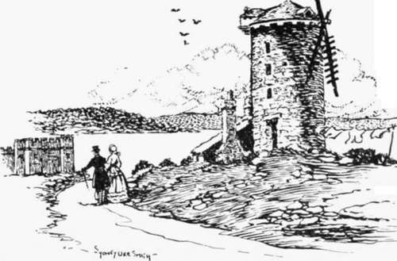

The Windmills Of Old Sydney. Part 2
Description
This section is from the book "Stories Of Old Sydney", by Charles H. Bertie.
The Windmills Of Old Sydney. Part 2
" After much time had been lost through the wheels in Y\ ilkinson's machine going wrong, the whole thing was abandoned; the responsibility for the failure was laid principally on the timber used for the cog wheels not being seasoned, and thus causing them to give way. Baughan's mill on the whole was pronounced the superior, and Wilkinson returned crestfallen to Parramatta."
These were the last of the man-power mills, as Governor Hunter arrived in 1795 in the Reliance, bringing with him a windmill and a model to assist the men in its erection. The bill of the maker (one Stedman) of this mill reads:-
Mill work.......... | £94 | 0 0 |
A small model to direct the setting it up | 2 | 2 0 |
Painting, etc. | 1 | 3 0 |
£97 | 0 | |
Expenses to Deptford | 1 | 1 0 |
Mr. Stedman makes his total £99 18s., which demonstrates some commercial ability. This windmill was erected on the site now occupied by the Observatory, and was completed in February, 1797. One bushel of wheat ground in ten minutes was its record, which leaves no reason to doubt the veracity < if an historian who writes that convicts would wait up all night to catch their turn to have wheat ground. On many occasions the morning tap of drum, summoning him to work, would come before the unfortunate man received his flour; then his choice was no breakfast or raw wheat.
A delightful little commentary on the period is provided by a letter written by Governor Hunter on the 1st of June, 1797, in which he makes reference to the mill we are discussing. The Governor writes:-" I will not fatigue you with an account of what steps I am pursuing for bringing this turbulent and refractory colony to a proper obedience to the laws and regulations established for the general welfare. You will see what I have thought it right to say in my public letters. I will, however, mention a circumstance which has just happened, and which may serve to show how great a number of trusty people are necessary for looking after the worthless villains we have here to manage. Our windmill, which has just been finished, and is now at work, was the other day employed grinding some wheat for people who had some time past been obliged to pay almost one-half their grain to have the other ground. Whilst the miller was absent, and left these very people for whom the mill was then at work, in care of it. during his absence they were clever enough to steal away some of the sails from the vanes or fans, and we have not been yet able to discover the thief. The mill, for want of its sails, was consequently stopped." This is somewhat reminiscent of the eighteenth century story of the thief. Jonathan Wild, who on his way to the gallows picked the pocket of the clergyman sitting in the cart with him.
In a report of the 13th of August. 1806. it is stated that this windmill was then useless. A second and more imposing mill huntsman with two clogs in the upper portion of the Botanic Gardens. Mr. Smith has shown the mill tower in its sere and yellow age -sans sweeps-sans sails. In the left-hand corner the battlements of Government House stables are visible.
This mill brings into our view an interesting figure who played a small part in the drama of our early days. His name was John Boston, and he owned the mill shown in the drawing. The first reference we have to Mr. Boston is in a letter written by him on the 5th of December, 1793, to the Under-Secretary of State in which he offers himself as a settler in Xew South Wales. In detailing his qualifications Boston says: "I was brought up as a surgeon and apothecary, but have never since followed that profession. I have since made my particular study those parts of chemistry that are more particularly useful in trade and business. Have, therefore, a knowledge of brewing, distilling, sugar-making, vinegar-making, soap-making, etc. I have been in business as distiller, but was insuccessful. I likewise have a theoretical and some practical knowledge of agriculture." With such qualifications, united with the fact that " my views are not ambitious," it is not surprising that Mr. Boston was accepted as a settler and arrived here in the ship Surprise, being one of the first three to arrive in New South Wales as settlers. Instructions were sent out to Governor Hunter to assist the newcomer, who proposed to undertake the curing of fish. Our next view of Mr. Boston comes through a pig-not a particularly heroic medium, but 'twill serve (did not the " sow business" of 1644 affect the destiny of Massachusetts?). Now Mr. Boston owned some pigs in the year 1795, and these were wont to root on a close, the property of Captain Foveaux. The Captain did not object, but Quarter-master Laycock, who differed with Boston in the matter of a cash transaction, determined to adjust that difference to his satisfaction. To this end he instructed a private to shoot a pig when next they strayed. This was done, and of course the unfortunate porker happened to be the best of the tribe. Mr. Boston appeared on the scene, blows followed words, and the subsequent proceedings were transferred to the court. The offended and damaged owner claimed £500 damages from the quarter-master, the private (William Faith-full) and two other members of the N.S.W. Corps who happened to be present. The trial lasted seven days and aroused the intense interest of the wdiole communitv. The verdict was for Boston against the first two with damages at twenty shillings each.
Boston's Mill in Botanic Gardens.
The mill erected by Boston passed, before 1807, into the possession of Commissary John Palmer, who built another which stood near the site of the Governor Phillip statue in the Botanic Gardens. Further south, and occupying the land on which Governor Bourke's statue stands, a small post windmill was erected by Henry Kable. one of our early merchants. This mill was removed afterwards to the heights of Darling-hurst. Mr. Palmer had a bakery also on his grant.
Continue to: